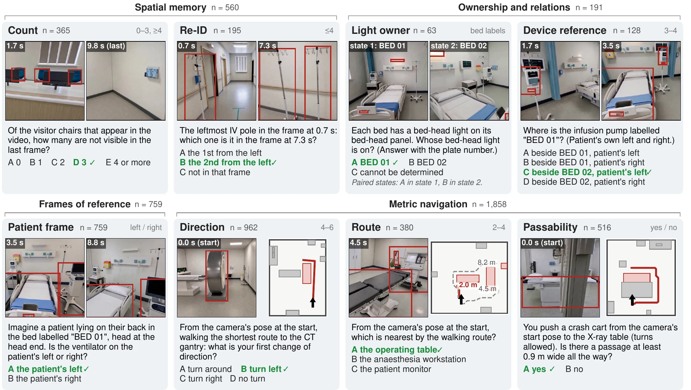
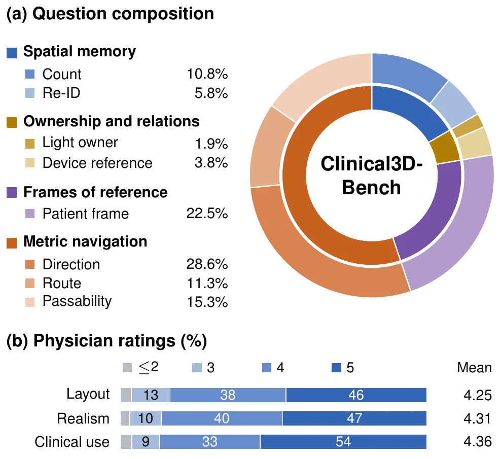

Spatial reasoning in hospitals requires tracking look-alike equipment, interpreting patient-relative directions, and judging passage widths, yet existing benchmarks provide limited coverage of these abilities. We introduce Clinical3D-Bench, a simulated benchmark with 3,368 questions of eight types on egocentric walkthroughs of 373 hospital-room layouts. Layouts follow hospital design guidelines, answers are computed from the 3D scenes, and paired scene states test whether models change their answers when relevant evidence changes. Videos are photorealistic, and ten physicians screened the layouts. Among 35 multimodal large language models (MLLMs), the best open and proprietary models reach 45.7% and 53.6% macro accuracy, against 40.8% for an answer prior and 79.0% for physicians on a subset, and 27 of 32 open models score below 40% on two-way patient-relative directions. Fine-tuning on Clinical3D-Train, our 44,750-question training set, lifts two MLLMs 16–20 points above the best proprietary model. 3D maps given to the fine-tuned MLLM as input go largely unused: replacing them with another video's, even when they are ground truth, barely changes its accuracy. The proposed GeoJeV instead lets the MLLM compute with 3D: it reconstructs a scene memory from each video, selects 3D operations and their arguments from the MLLM's question state, and adds their evidence to its option scores. It achieves the highest accuracy of all evaluated models, narrowing the gap to physicians.
Scenes are generated in simulation from hospital design standards and every answer is computed from the scene record; the clips are transferred to photorealistic appearance, verified against the scene and screened by physicians. A disjoint training set, Clinical3D-Train, has 44,750 questions.



Twelve benchmark clips from twelve room families. Switch between the photorealistic video, the source render and the instance masks, then try the questions.
Accuracy (%) on Clinical3D-Bench. Click a column header to sort (within each group); click again to reverse.
Avg. is the macro average of the eight types and sets the rank. Bold and underline: best and second best in each column among zero-shot and among fine-tuned models. Frames: number of video frames given to the model. Human = five physicians on a 400-question subset.
@misc{bai2026clinical3dbench,
title = {Clinical3D-Bench: Evaluating and Improving Spatial Intelligence of Multimodal LLMs in Hospital Environments},
author = {Bai, Yang and Xia, Yingzhi and Lin, Ling and Cheng, Jun and Fu, Lin and Fu, Huazhu},
year = {2026}
}